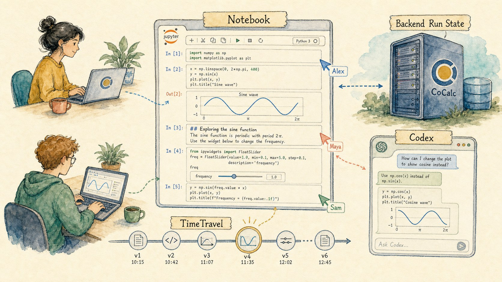
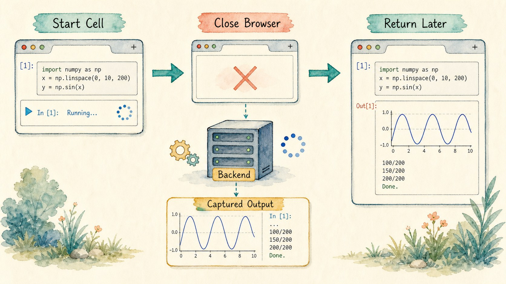
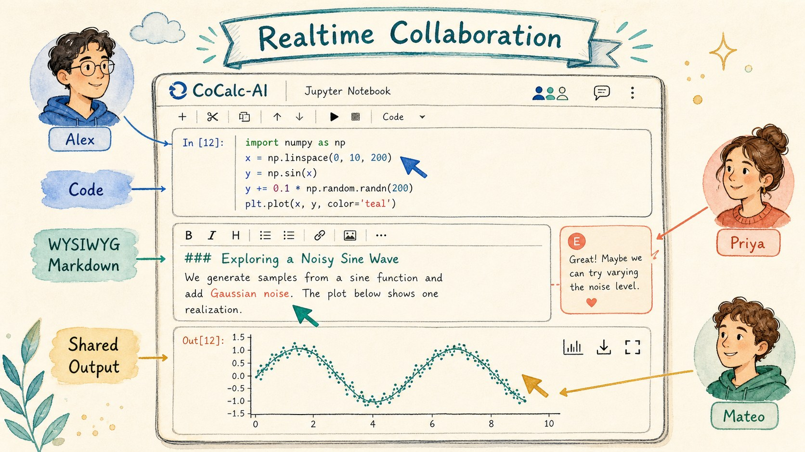
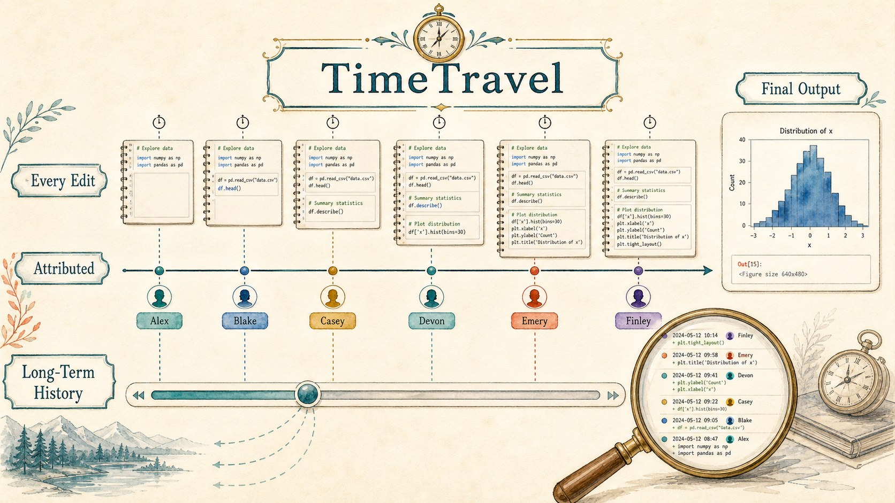
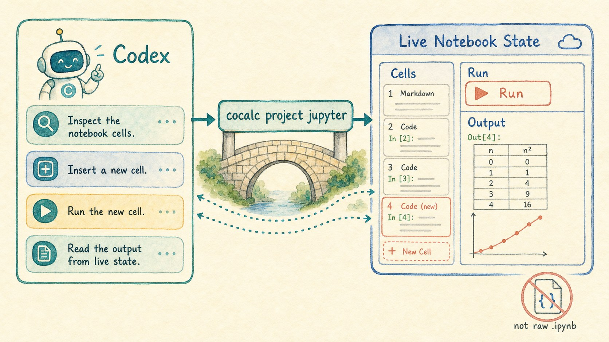
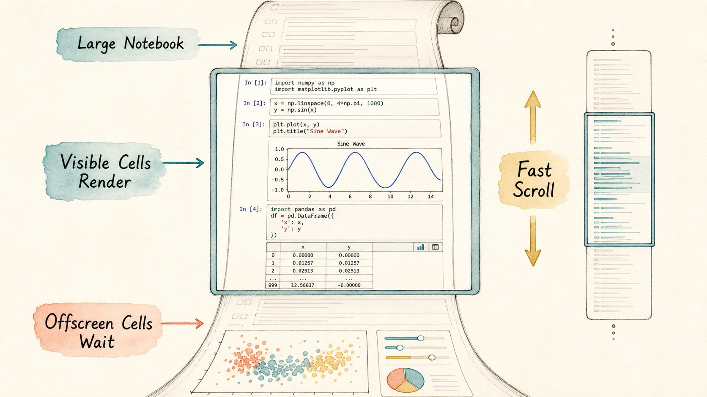
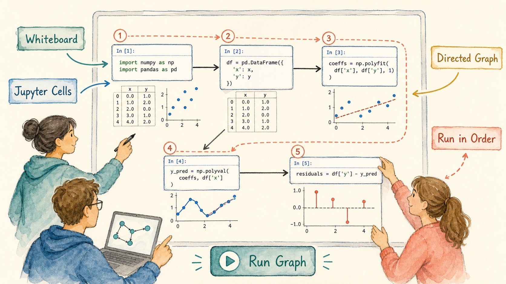

A CoCalc-AI field guide for computational notebooks
CoCalc Jupyter Notebooks
CoCalc keeps the familiar Jupyter notebook shape, then adds durable execution, realtime collaboration, TimeTravel, Codex access to live notebook state, scalable rendering, widgets, whiteboards, and course workflows.

A notebook is usually the most important document in a computational project. It contains the experiment, the explanation, the plots, the false starts, and the result someone needs to trust.
CoCalc-AI treats that notebook as shared project infrastructure, not just a browser widget. The browser is a view into backend notebook state. That one design choice changes how safe it feels to run code, collaborate, ask Codex for help, and come back to work later.
Run a cell, then leave
In a conventional JupyterLab session, browser state matters more than it should. In CoCalc, the notebook run is owned by the backend. Start a cell, close the tab, refresh the browser, or reconnect from another machine: output continues to be captured.
That is especially valuable for real research notebooks, where a cell may fetch data, fit a model, render a plot, or run for longer than your attention span.

Work in the same notebook at the same time
CoCalc notebooks are realtime collaborative documents. Multiple users can edit cells, watch execution, discuss output, and see changes without passing files around.
Markdown cells are not second-class text blobs. You can edit them with a WYSIWYG experience between code cells, which makes notebooks feel more like readable documents and less like alternating boxes of raw syntax.

Use TimeTravel instead of memory
CoCalc records notebook history at high resolution as you type, with authorship attached to changes. TimeTravel is lightweight enough to be ordinary, but useful enough to recover the moment before a bad edit, compare what changed, or explain how a result evolved.
Notebook TimeTravel stores the document history long term without trimming away old revisions. For outputs, the history focuses on the final output state instead of bloating the record with every transient streaming step.

Let Codex use the live notebook
A notebook on disk is not always the notebook you are using. CoCalc
gives Codex a project-scoped notebook API through
cocalc project jupyter, so the agent can inspect cells,
insert or move cells, run selected code, and read output from the
live notebook state.
cocalc project jupyter cells --path analysis.ipynb
cocalc project jupyter run --path analysis.ipynb --cell-index 3
cocalc project jupyter exec --path analysis.ipynb --stdin
That makes notebook help much more concrete. Codex can fix a
traceback, add a verification cell, rerun just the relevant code,
and report what changed without pretending that raw
.ipynb JSON is the source of truth.

Open notebooks that would normally feel heavy
Large notebooks are common: lecture notes, exploratory research, simulation logs, homework solutions, and data science reports. CoCalc renders notebook content efficiently by focusing work on what is visible as you scroll.
The result is practical rather than flashy: big notebooks stay navigable, long outputs are controlled, and the interface remains close enough to standard Jupyter conventions that users do not have to relearn the document.

Keep the Jupyter ecosystem, add CoCalc infrastructure
ipywidgets and standard visualization libraries belong in the notebook, with collaborative state carried through CoCalc.
nbgrader support connects notebooks to assignment and grading workflows.
Use the kernels and packages installed in the project environment.
The same notebook can be a working document, a course artifact, or a public viewer target.
Use a whiteboard when linear cells are not enough
Some computational ideas are graphs, not lists. CoCalc's whiteboard can hold Jupyter cells as nodes in a directed graph, then run them in order. That is a natural fit for workflows, dependency diagrams, computational pipelines, and teaching examples where the structure matters as much as the code.
It is still CoCalc: collaborators can work on the same board, Codex can reason about the project around it, and outputs remain part of a shared workspace instead of a private local session.

CoCalc's notebook goal is not to replace the Jupyter mental model. It is to make that model safer for serious work: durable when the browser disappears, collaborative when people work together, historical when changes matter, and accessible to agents through the same live state users actually see.